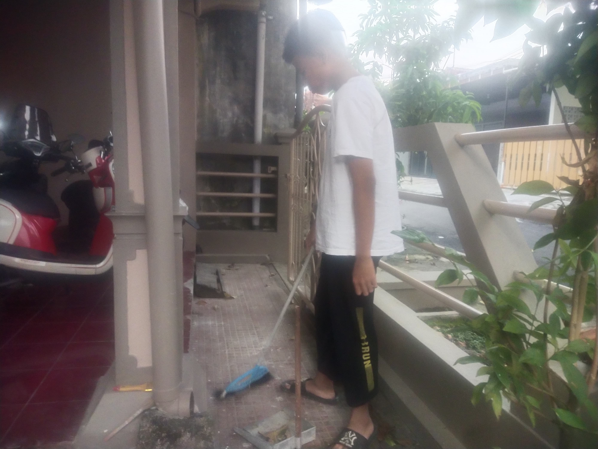

Saya melakukan kegiatan gotong royong di sekolah, seperti membersihkan jalan masuk menuju kelas.

Saya melakukan kegiatan gotong royong di lingkungan keluarga, dengan membersihkan halaman depan setiap pagi.

Saya melakukan kegiatan gotong royong di lingkungan masyarakat, dengan membersihkan alat-alat yang kotor sehabis melakukan kegiatan kerja bakti yang ada di lingkungan saya.